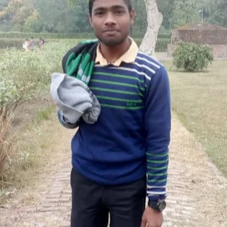

Students At MMMUT Gorakhpur
My name is Arun Kumar. I was born in Gorakhpur and luckily I got a addmision in my Home City i.e. Gorakhpur. I'm a student at Madan Mohan Malaviya University of Technology Gorakhpur. I'm currently pursuing my B. Tech in Electronics and Communcation Engineer in 3rd. My hobbies are singing, composing poetry, playing cricket and reading books. I like reading novels and self help books. currently, I'm reading a novel named Train to Pakistan. This books talks about the separation of India and Pakistan and difficulties faced by the people that time.
Life is to live the way you want
Learn More About me